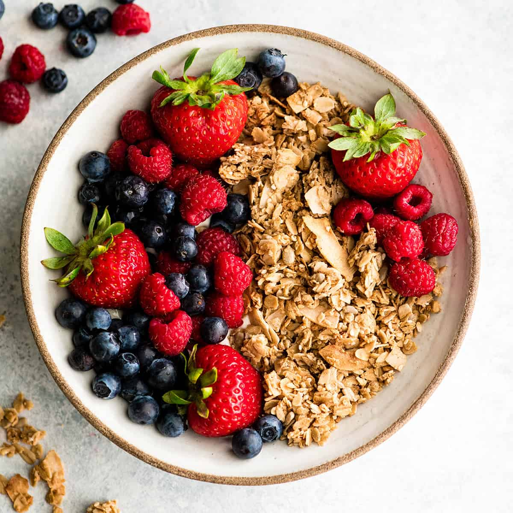

Chicken breasts: use boneless skinless. Chicken thighs will work great too, just cook a little longer.
Olive oil: Vegetable oil can be used here as well.
Low-sodium soy sauce: You can also use 2 1/2 Tbsp standard soy sauce with 1 1/2 Tbsp water.
Brown sugar: I use light brown sugar, dark would be fine or even granulated sugar.
Sesame oil: This has a bold flavor, so a little goes a long way. Unrefined peanut oil can be used as well, add extra.
Ginger: Fresh is best, but if you must 1/2 tsp dried ginger could be used.
Garlic: Again fresh is better, but 1 tsp dried granulated will work.
Cornstarch: This helps thicken the sauce so it is critical to the recipe. Arrowroot starch could be substituted.
Instructions
Heat oil in a large non-stick skillet or wok.
Add chicken and let cook (giving space between pieces) until slightly browned on bottom then flip chicken pieces over and cook through.
While the chicken is cooking whisk together the teriyaki sauce mixture.
Pour sauce into the skillet once the chicken is just nearly finished cooking through and let the sauce cook and simmer until thickened.
Home Made Granola

Ingredients
1/2 cup canola oil or other neutral oil, such as coconut or olive oil
1/2 cup honey or maple syrup
1/2 teaspoon ground cinnamon
1/2 teaspoon salt
3 cups old-fashioned rolled oats
1 cup sliced almonds
1 cup raisins or other dried, chopped fruit
Instructions
Heat the oven to 300°F and line a baking sheet with parchment paper. Arrange a rack in the middle of the oven and heat the oven to 300°F. Line a rimmed baking sheet with parchment paper.
Whisk together the oil, honey, cinnamon, and salt. Place the oil, honey, cinnamon, and salt in a large bowl and whisk to combine.
Add the oats and almonds and stir to coat. Go ahead and measure the oats and almonds right into the oil mixture — don’t worry if you add a little more oats or almonds — granola is very forgiving. Stir to coat well.
Spread the oats out onto the prepared baking sheet. Transfer the mixture to the prepared baking sheet and spread into an even layer. If the granola is clumpy, use a spatula to press it into the pan.
Bake for 20 minutes, stirring halfway through. Bake, stirring halfway through, for about 20 minutes total. The granola is ready when golden-brown and the almonds have toasted — it will still feel wet coming out of the oven but will dry as it cools.
Remove from the oven, add the fruit, tamp down, and cool. Place the baking sheet on a wire rack and sprinkle on the raisins or fruit. If you want clumps of granola, press and tamp down the granola before it cools, which will help it stick together. Cool completely before storing.
Store in an airtight container. Transfer the cooled granola to an airtight container for long-term storage at room temperature.